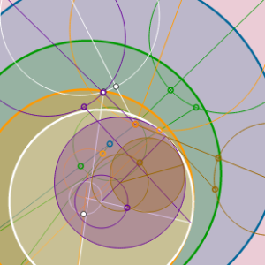

Aquí encontraras toda la información relacionada con la programación, desde una breve descripción, ejercicios o programas, hasta diversos proyectos e investigaciones.
Bases de Datos
Aquí encontraras toda la información en relación a las bases de datos, desde una breve descripción, ejercicios o recomendaciones, hasta proyectos e investigaciones donde se relaciona o aplica dicha materia.
Sistemas Programables
Aquí encontraras toda la información relacionada con los sistemas programables, desde una breve descripción, ejercicios y programas, hasta proyectos e investigaciones donde se aplica dicha materia.
Taller de Investigacion
Aquí encontraras toda la información relacionada con el taller de investigaciones, desde una breve descripción, procesos y recomendaciones, hasta proyectos donde se aplica dicha materia.
Redes de Computadora
Aquí encontraras todo lo relacionado con las redes de computadora, desde una breve descripción, consejos y métodos, hasta proyectos y aplicaciones.
Gestion de Proyectos
Aquí encontraras todo lo relacionado con la correcta gestión de proyectos, desde una breve descripción, consejos y metodologías, hasta proyectos, investigaciones y aplicaciones en el ámbito laboral.

Calculo Diferencial
Aquí encontraras todo lo relacionado con calculo diferencial (descripciones, ejemplos y ejercicios, hasta formularios, proyectos y diversas aplicaciones).
Calculo Integral
Aquí encontraras todo lo relacionado con calculo integral (descripciones, ejemplos y ejercicios, hasta formularios, proyectos y diversas aplicaciones).